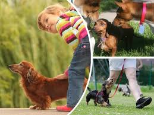

Dachshund Lover

Quienes Somos
Creamos esta página para brindarte informacion general sobre la raza Dauchshund (los simpaticos perros). Aquí podras conocer más sobre sus antecedentes,características,salud y cuidados.

El Teckel es inteligente, amable y tranquilo, con lo que es considerada como una mascota excelente. Compañero fiel, buen amigo y muy casero, se adapta perfectamente a la vida dentro de un apartamento.